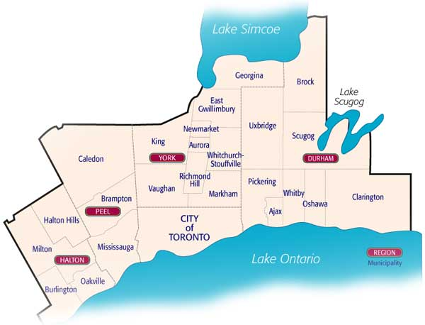

|
Всем огромный привет!
Я так давно не писала, что даже и не знаю, с чего начать... Не то, чтобы с момента моего последнего
письма произошло слишком много событий, но ведь что-то все равно
происходило. Ведь жизнь, какая бы она не была, не стоит на месте. И в каком порядке эту жизнь
освещать, я лично не имею ни малейшего понятия, тем более что половину
призабыла. Посему начну, как Бог на душу положит, ну а коли чего вспомню, то возвернусь.
Сначала о главном... Дом свой мы все-таки продали, но позже. Вернее сказать, сделку заключили почти
что в ночь перед католическим рождеством позапрошлого (декабрь 2002)
года. Так что, сами понимаете, к массе всех дел, необходимых для поддержания дома в чистоте и
порядке, добавилась еще и ежедневная расчистка драйвея от снега, также
павшая на мою женскую долю, ибо Андрюша к тому моменту времени был уже трудящимся человеком. Нам-то
сей снег по барабану, - Субару все равно и выедет и заедет, а вот
посетители не всегда попадались полноприводные :-).
Андрюша, кстати, устроился в WSIB. Это - большая, известная, полугосударственная контора,
занимающаяся выплатой страховок людям, коим так или иначе был нанесен
физический вред на рабочем месте. Несмотря, однако, на благие цели и множество памятников вокруг
здания в честь доблестных рабочих, оставивших свою жизнь у станка
или на стройке, компания сия весьма жадненькая, и несчастным людям приходится тратить массу нервных
клеток, прежде чем что-то из нее выбить. Андрюша говорит, что им
даже проводили курсы, как в случае чего защищаться от буйных поврежденных рабочих, справедливо
требующих своей законной страховки (Андрей: не столько как защищаться,
сколько - как от них прятаться и как охрану на помощь звать :-) ). Короче, между нами говоря,
контору эту, как выяснилось, все дружно не любят. Однажды даже был прикольный
случай. Андрюша приехал на заправку, где обычно заправлялся, с висящим на ремне пропуском в WSIB.
Работники заправки, отлично уже его знавшие (Андрей: знавшие скорее не
меня, а наши машины :-)), заметив на пропуске ненавистную аббревиатуру, в шутку сказали: ах
вот как! Ты работаешь на WSIB! Фиг-то мы тебя сейчас отсюда выпустим! :)
Итак, продали мы дом весьма выгодно. Сразу же бросились присматривать новый дом. На сей раз решили,
что 3-хбедрумного таунхауза с незаконченным (правильнее сказать, с
неначатым бэйсментом) нам вполне будет достаточно. Да и если намного севернее переедем, то тоже не
умрем.
Дом выбрали в своем репертуаре,.. - в первый же день просмотра :-). А если совсем уж честно, то это
был всего лишь второй дом, который мы имели счастие лицезреть. Первый
дом располагался в Авроре. Это, по-моему, самый северный город GTA (Андрей: ну, как видно из
карты GTA - далеко не самый северный).

GTA - это Great Toronto Area, включает в себя сам Торонто и все прилегающие к нему городишки
(наверное, +-150 км).
Что подразумевать под городишками, это, наверное, даже самим канадцам невдомек (точно так же, как
они встают в тупик перед вопросом, когда у них кончается день и начинается
вечер :-)). Просто здесь повсюду либо районы, плавно перетекающие в города, либо города - в районы,
либо районы в районы городов... Короче, без поллитра не разберешься.
Например, мы жили в населенном пункте Thornhill, который в составе города Vaughan, который
принадлежит GTA.
В общем, Аврора - это на самом севере, что нас совершенно не пугало. Да и дом нам в целом показался
ничего, - самый что ни на есть обыкновенный таунхауз. Только что опять
всюду это дурацкое ковровое покрытие не первой свежести, да еще и бордовое.
Повез нас наш агент и друг Боря во второй дом.
Узнав, где он находится, мы воодушевились. Это был наш любимый в Торонто (вернее, в GTA) район, - на
пересечении хайвея
7 и хайвея 400, а точнее хайвей 7 и Weston Road. Это там, где располагается наш любимый кинотеатр
Колоссус, и где наш любимый продовольственный магазин Фортинос (мои
родители в свой приезд в Канаду даже выразили желание сфотографироваться в нем), и вообще где дофига
наших любимых мест. Звоним в дверь, - дома никого. Мы попялились
в дверное окно (ведь двери здесь в большинстве случаев стеклянные, а тут еще и дополнительная
стеклянная полоса снизу доверху, которую, правда, впоследствие по недюжинному
настоянию Андрюши пришлось зафростить :-)) и восхитились, еще даже будучи снаружи. Покружились
немного по райончику, и опять вернулись к дому. На сей раз счастье улыбнулось
нам: дверь открыли, и просмотр потенциального жилища был успешно произведен. Нравилось все. И
расположение, и пространство, и свет, и отсутствие ковровых покрытий (везде
паркет, деревянные лестницы), и то, что дом сей был угловой во всем таунхаузе.
Последний факт оказался причиной и как бы двойного бэкъярда. Вернее, помимо бэкъярда у дома
еще есть и сайдъяд (сбоку). Для сравнения, бэкъярд нашего бывшего дома (отдельного и 4-хбэдрумного)
был куда меньше. А когда Андрюша заприметил на том сайдъярде еще и
маленькую сараюшку для всякого садоводного инвентаря (там же у нас теперь живут и велосипеды), то
просиял еще пуще.
В общем, по дороге к следующей точке обследования мы признались Боре, что жутко запали на этот
итальянский дом. Там жили итальянцы, как и в большинстве домов данного
района (или города?) под названием Woodbridge (что в переводе на русский означает деревянный мост).
Кстати, сей Woodbridge опять-таки входит в Vaughan. Woodbridge -
итальянский район, со множеством итальянских магазинчиков и ресторанчиков. Ко всему прочему, это
единственный из известных нам населенных пунктов, где так мало китайцев.
К нулю, конечно, их число не стремится, наверное, ни в одной точке земного шара, но, во всяком
случае, здесь к бесконечности уж точно не приближается.
Не скажу, что мы - рассисты. Нет. Мы знаем достаточно много китайцев, истинно достойных
уважения и просто очень приятных людей. Но вот когда их собирается больше одного,.. -
это уже толпа... В общем-то, большое скопление народа любой нации немного отталкивает. Скорее всего,
психологически, - оттого что ты чувствуешь себя чужаком среди них. Русских,
например, здесь тоже очень уважают, особенно как работников, ибо они скорее умрут, но сделают все к
сроку и на совесть. Но сборище русских зачастую заметно раздражает, причем
не только коренных канадцев, но и самих русских. Проблема китайцев, однако, усиливается еще и теми
факторами, что во-первых, их тут (по крайней мере, в Торонто) больше всех, -
дня нельзя прожить, чтоб не встретить на своем пути десяток-другой китайцев, а во-вторых, после
эпидемии SARS (атипичной пневмонии) их как-то стали сторониться, - ну кому
охота помирать молодым? А то время было как раз разгаром эпидемии.
Возвращаясь к дому, скажу, что все было сделано очень быстро, в один день. Мы, не выходя из своего
репертуара, взяли быка за рога. Иными словами, не долго думая, выписали
итальянцам оффер. ...Но дом доставался не без крови. Сплошная коррида! Итальянцы, в отличие от нас,
сначала прикупили себе дом, потом стали продавать старый. Поэтому шибко
нервничали, боясь, что не успеют продать к положенному сроку. В то же время дом очень хороший,
достаточно новый, в замечательном состоянии, и настоящая цена ему, честно
говоря, - куда более высокая, нежели предложенная нами. Торговля была трудной и нервозной, уступали
неохотно. Мы бы, конечно, уступили с радостью, будь у нас финансовое
положение получше. Да и у них похожая ситуация, судя по тому, что они даже забрали с собой стиралку
и сушилку, потому что у них якобы нет денег на покупку новых. Боря
еле-еле сговорился с ними, чтоб хоть посудомоечную машину с холодильником оставили. К концу дня
все-таки бумаги были подписаны, и все радостные друг с другом распрощались,..
не зная еще, сколько всего ждет нас всех впереди.
Итальянцев ждало разочарование и кусание локтей, ибо на следующий день они получили аж 2 оффера на
10 и 15 тысяч больше нашего. А нас ждали две неприятности. Одна касалась
несостыковки дат выезда из старого дома и въезда в новый. Итальянцы могли покинуть таунхауз только к
маю, а наши покупатели норовили овладеть жилищем уже к апрелю (по
причине беременности). Таким образом, нам надо было искать, где прокантоваться месячишко и куда
вывезти все вещи на это время. Вторая же проблема была связана с получением
мортгиджа. Нам его долго и упорно не хотели давать из-за большого количества долгов по кредитам.
Немало времени мы потратили на обстукивание порогов нашего ненавистного
Scotia банка. Немало было потреплено нервов. Но как вы уже поняли из всего вышесказанного, все,
слава Богу, обошлось. Совершенно нет желания описывать всю эту эпопею, -
слишком неприятные воспоминания с нею связаны.
Теперь оставалось понять, куда податься на месяц? С вещами мы довольно просто определились. Заказали
U-Haul-овский трак для переезда. В качестве
скидки (promotion) они
дали нам бесплатное хранилище на месяц. Грузчиков на сей раз не заказывали.
Прикольно то, что тем летом у массы наших друзей были переезды. И никто не вызывал грузчиков. Все
сами заказывали траки и сами вели их. Так и мотались все лето толпой: то
одного дружно перевозили, то другого. С последующими пьянками и новосельями. Прямо, как в России
:-).
Насчет временного жилья у нас были некие надежды, как говорится, на худой конец. Все-таки многие из
наших товарищей при домах. Однако, странно было то, что в первую очередь
гостеприимные предложения поступали от людей, чей жилищный вопрос был не слишком-то живописно
разрешен. Например, звала к себе Света Тесленко, у которой в доме творился
сыр-бор в связи с переездом в кондо. К тому же к ней приехала мама на постоянное место жительство,
но Света искренне жертвовала нам свою комнату, собираясь жить в зале на
диванчике. Звал к себе мой друг Виченсу, который живет вместе с родителями и братом, и к которому,
ко всему прочему, собиралась приехать жена из Румынии. А тут,
представляете, еще и мы с Гэндальфом? :-) Приглашало, наконец, к себе семейство Плюшко, которые
вообще снимают 2-хбедрумный апартамент. ...А тот самый худой конец оборвался...
Таким образом, до самого последнего дня мы так и не знали, где будем жить грядущий месяц.
Здесь, в Канаде, или даже во всей Америке, или просто за рубежом, частенько все становится
с ног на голову или наоборот. Люди, прожившие вместе более 15 лет, могут ни с
того ни с сего развестись. Напротив, часто ссорившиеся пары вдруг начинают жить мирно и счастливо.
Едва "обогатившись", ты не каждого жаждешь пускать себе в дом. А, будучи
в нестабильной ситуации, ты всегда рад помочь другому. Не на всех, конечно, это распространяется. Но
странные случаи здесь весьма нередки. Уж не знаю, чем сие объясняется.
Может, оттого, что здесь люди начинают чувствовать какой-то потенциал, скрытую энергию, личные силы
к изменению ситуации, веру в будущее, чувство того, что в принципе тебе
все доступно, уверенность в себе. Не знаю... Такое ощущение, что многие жизненные параметры, идеалы,
принципы как бы пересматриваются людьми, в соответствии с чем баланс
перевешивается у одних в одну сторону, у других в другую. Я лично поняла для себя, что сам переезд в
незнакомое место - это вроде проверки на прочность, нечто сродни
приготовленному жизнью экзамену, который заставляет тебя сделать свой, единственно правильный,
выбор. Все, разумеется, относительно. Ведь я сужу со своей колокольни. А
значит, субъективно определяю пути правильные и неправильные. Быть может, через пару-тройку лет я
запою совсем по-другому. Кто знает? Я знаю только, что иначе мне петь не
хотелось бы... Мы с Андрюшей живем душа в душу, не без раздоров, конечно, но все время пытаемся
найти компромиссы. Дом без гостевой комнаты просто не мыслим. Пусть она у
нас не шибко обставлена пока, но друзья нас навещают часто, и пока что никто не жаловался. Мы всегда
рады близким и родным.
В общем, после перевозки в хранилище вещей, под водочку и пельмени Плюшки предложили перебираться к
ним. И мы, так же под водочку и пельмешки, приняли сие предложение.
Расселились мы в комнате Артема, сына Гали и Саши. Сам Артем ночевал в зале, бедолага. Гэндальф
первую ночь никому не давал спать, страшно нервничал, плакал, не мог найти
себе место. Под утро, однако, смирился с ситуацией. Распознал, где сортир, где еда, куда можно
лазить, куда нельзя и в общем более никому за весь месяц никаких особых проблем
не доставлял, кроме того что иной раз проявлял слишком уж непомерный интерес к цветам на подоконнике
:-). Я, будучи единственным неработающим членом "семьи", взяла на себя
готовку пищи. Все время как-то хотелось скомпенсировать то щемящее чувство, будто мы сидим у людей
на шее. Так и жили. В целом, дружно и весело. Как говорится, в тесноте да
не в обиде. Где-то, может, мы вели себя не так, как было бы нужно. Но видит Бог, мы изо всех сил
пытались подстроиться под режим семейства Плюшко, хотели хоть как-то быть
полезными. И если мы чего-то делали не так, простите нас, дорогие Плюшки. Я поклялась, что никогда
не забуду вашу доброту.
Также большое спасибо всем друзьям, кто помог и до сих пор помогает нам в столь трудный период
жизни. И за переезд всем огромное спасибо, тем более что у нас их было два: в
хранилище и из хранилища.
С самого момента увольнения я каждый день упорно искала работу, несмотря на то, что почти все эти
дни стояло абсолютное затишье. Сейчас, глядючи на весь этот даже не кусок,
но ломоть времени, я просто ужасаюсь, оттого что почти половину того самого времени я просто
выкинула впустую. Каждый божий день сидя с утра до обеда, штудируя сайты, рассылая
резюме... Если бы заранее знать, что все это не поможет, сколько бы всего полезного я успела
сделать, какой размах творчеству был бы предоставлен! Но... заранее никогда не
знаешь. Случались какие-то интервью, но успехом не оканчивались. Слишком большой конкурс на каждую
позицию.
В своем предыдущем письме я распространялась относительно своего интереса к дизайну помещений. Это
дело так увлекло меня, что буквально после выезда из старого дома, в
апреле, я решила взять дизайнерские курсы (Interior Design) в SCI - Stratford
Career Institute. Дилетант и неуч, я разрисовала себе невероятно красочные перспективы,
намереваясь по окончании институтской программы заняться дизайнерским бизнесом. Все это, конечно,
очень интересно, но при ближайшем рассмотрении оказалось, чтобы стать
дизайнером, надо пройти чуть ли не больше ступеней, чем если стать врачом. Во-первых, оканчиваемое
учебное заведение должно распознаваться ассоциацией FIDEX, во-вторых,
нужно еще сдать супер-сложный и далеко не однодневный экзамен NCIDQ, после чего тебя примут в
онтарийское дизайнерское общество ARIDO,
в-третьих, чтобы поиметь доступ к
тому экзамену, нужно проработать как минимум 4 года по дизайнерской специальности. Как можете
догадаться, SCI никакого отношения к FIDEX не имеет. Я, разумеется, узнала
для себя много нового из того материала, что мне присылали из института, мне осталось сейчас сдать
только один экзамен, но с подобным образованием я нафиг никому не нужна.
То есть надо идти учиться либо в Академию (где платят за обучение 13 с половиной тысяч в год), либо
в специализированнный колледж. Сложно все это. Я, как человек упорный и
настойчивый, нашла в интернете 177 дизайнерских компаний в GTA. Всех обзвонила с целью найти хоть
какую-то работу, кому-то слала резюме факсом, кому-то е-мэйлом, всех
направляла на свое онлайновое резюме. Кое-кто
интересовался, но на работу так никто и не призвал. Мне неловко просить, но если у вас, дорогие
читатели, есть какие-то
знакомые в дизайнерской сфере, может, я могла бы заинтересовать их как помощник или еще кто (на
многое я, конечно, не претендую, просто хочется начать приобретать как можно
побыстрее мало-мальский дизайнерский опыт). Я ездила в Интернациональную Академию
Технологий и Дизайнерства, узнавала, что
да как. Там меня заверили, что с моим образованием
меня возьмут де сразу на второй курс, а по окончании (через 2 года) присвоят статус бакалавра из-за
того, что у меня уже есть университетское образование (не важно, по какой
специальности) и потому, что я уже являюсь мастером наук. Они же берут на себя и выдачу лоана, то
есть того самого огромного кредита под обучение. Все бы ничего. Хоть
сейчас иди учись. Для меня сделали тур по академии. Там все так здорово! В классах стены стеклянные,
и хорошо видно, кто чем занимается. В одних классах работают над
чертежами, в других шьют (это модельеры одежды), в третьих снимают кино, в четвертых - студии
звукозаписи, в пятых - трудятся над компьютерной графикой. А какие обалденные
стенды в коридорах висят с работами студентов! Какие макеты и миниатюры выставлены в уголочках!
Эх.... К тому же они говорят, что у них много студентов сочетают учебу с
работой на парт-тайме. Но конкретно в данный момент времени от моей учебы никому ни жарко, ни
холодно не станет. Сейчас главное, что от меня требуется, это работа,
зарабатывание денег, иначе мы окончательно погорим в долгах и обанкротимся.
С упадком моего настроения на дизайнерском поприще отчего-то вдруг резко расцвел рынок труда в
Информационных Технологиях. Первый взлет наблюдался еще летом (не помню,
когда точно, но все вдруг как-то активизировались, звонили, писали, звали на интервью). И вот с
конца осени мы переживаем вторичный подъем. Первым его испытал на себе
Андрюша. Его как раз в конце осени сократили из WSIB, и он активно принялся за поиски работы (Андрей:
не везет мне, как куда ни приду, так через 1-2 года там бюджет
сокращают : Вот и в WSIB сократили, да так, что в первый-же день уволили 45 человек - программеров,
и меня в их числе. Говорят, там сейчас все еще продолжают помаленьку
увольнять, хотя уже почти 2 месяца прошло с начала увольнений).
Меня в этот момент не было вместе с ним. У нас случилось большое горе, - мой папа умер. Поэтому я 3
недели провела в России... Андрюша не говорил мне, что уволен, чтобы
еще и этим не расстраивать меня. Но когда я вернулась, то просто поразилась загруженности его
"рабочего" графика. Иной день он имел аж по 3 интервью, не говоря уже просто
о телефонных, которые, казалось, длились бесконечно. В результате так случилось, что Андрей был
поставлен перед дилеммой, если не трилеммой (коли существует таковое слово).
В один момент он получил сразу 2 оффера, в то время как надеялся на 3-й и с минуты на минуту ждал
четвертый.
- У меня еще никогда в жизни не было такой ситуации, - признавался Андрей. При этом глаза его, как у
сурка, расползались в разные стороны. Он спрашивал меня, что делать,
звонил за советом всем своим друзьям. Все эти разговоры, тем не менее, к определенности не
приводили, и глаза расползались еще дальше. Порешили сойтись на наиболее
стабильном варианте - TD (Toronto Dominion) банке. Вот он уже с католического рождества работает, а
с других мест до сих пор определенного ответа нет, - все решают.
Я, немного придя в себя, тоже взялась за поиски работы в IT. В дизайнерстве еще неизвестно, чего
ожидать, а IT цветет и пахнет, - нужно ловить момент. Если весь год мне
чудилось, что я разговариваю просто со стенами, вернее, бьюсь о них лбом, то сейчас почти ни одно
письмо с резюме не остается без ответа, пусть даже самого плохого. Люди
звонят, пишут, приглашают на интервью. В общем, все это дает какой-то стимул к жизни и, безусловно,
вселяет надежду.
Вы спросите, чем же мы занимались прошедшим летом? Да как и позапрошлое лето, ездили по выходным и
праздникам (когда Андрюша не работал) в коттеджи и кэмпинги. Очень
хотели податься на машине на восток Канады, в Nova Scotia и другие близ лежащие провинции, но при
ближайшем рассмотрении и разумных подсчетах поняли, что тем самым только
еще больше влезем в долги. Так что Марина с Сашей опередили нас. А мы
довольствовались более дешевым досугом. Но не жалеем. Тем более что моим самым большим достижением
за все эти вылазки на природу было то, что я, наконец, научилась кататься на водных лыжах!!!

Первый раз я пробовала встать на лыжи еще в России, в новосибирском Обском море. Сказать,
что я потерпела полное фиаско, - это слишком мягко сказать. Результат был куда
плачевней. Во-первых, вылезши из воды, я напоминала матрац,.. обыкновенный советский матрац, только
не с продольными полосами, а поперечными. Эти полосы являлись
синяками, от ног до головы. Во-вторых, я переломала все ногти и вывернула палец. Невзирая на то, что
пострадавший палец был только один, мне наложили гипс на всю руку
до локтя, к тому же правую. А на следующий день мы собирались отправиться на отдых с палатками. Ну
как обидно! Я плакала, рыдала, грозилась сорвать сей чертов гипс.
Ведь ваш покорный слуга страшный любитель поплавать, а как этим заниматься в гипсе, совершенно не
понятно. Окончательно расквасившись, звоню своей подруге Любаше:
- Я никуда не поеду. Я ничего не могу делать. Я всех только замучаю.
- Наташа, если ты будешь так непрерывно ныть, то точно замучаешь.
- Мне даже трудно держать стакан.
- Ну,.. рюмку держать поди будет легче?
Эх, Любаша всегда знала, как развеселить меня. В любой трудный для меня момент она всегда могла
найти правильные слова, благодаря которым расстройство превращалось в
веселье, а слезы в смех. Так и поехали. Избежать воды я, однако, была не в силах. Поэтому
предусмотрительно прихватила с собой полиэтиленовый пакетик с резиночкой,
который напяливала на загипсованную руку во время купаний. Иными словами, плавала, как Чапаев, - с
поднятой рукой. Полноценным сие плаванье, разумеется, нельзя было
назвать. Посему я переключилась в инструкторское русло, и одного из наших друзей научила так классно
плавать, что аж у самой душа радовалась! А потом стали играть в
бадминтон. И я никогда не думала, что левой рукой играю почти так же хорошо, как и правой.
Все хорошо, что хорошо кончается, но с водными лыжами у меня, тем не менее, остались неприятные и
крайне тревожные ассоциации. В то же время эти чертовы лыжи были
одной из моих многочисленных мечт, и я рискнула попробовать опять, но только уже здесь, в Канаде.
Лыжи прикупил Костя Тесленко. Он, оказывается, еще в России ходил в водно-лыжную секцию, - посему
катается профессионально. Что он только не вытворяет! Излишне
говорить, что обходится он только одной лыжей, вторая ему ни к чему. Делает крутые виражи, прыгает,
второй ногой держится за палку. В общем, смотреть на него доставляет
большущее эстетическое удовольствие!
Игорь Скубицкий, другой наш друг, купил катер. Так что в наличии было все: и лыжи, и лыжник, и чем
это все тянуть по воде :-).
Я пыталась встать полдня. Ни шиша не получалось, несмотря на то, что Костя постоянно давал ценные
указания:
- Наташка, сиди на корточках до последнего! Не вставай, пока не почувствуешь стабильность, баланс.
Сиди! Сиди! Сиди, черт возьми, как будто на горшке сидишь!
Я честно пыталась следовать, но какая-то сила то и дело подымала меня ввысь, ну а потом... мордой
вниз :-(.
Ногти я, разумеется, все обломала, но кости, слава Богу, остались целы и невредимы, да и синяков не
прибавилось. Домой уехала крайне разочарованная, обессиленная, с
прочным чувством того, что я - полная бездарность.
А вот в следующий раз я, как это ни странно, встала с первого раза. И понеслась! И повороты
нормально прошла, да и вообще классно держалась! Горда была собой непомерно! :
И всецело благодарна Косте, как учителю. Ребята, это такое неописуемое наслаждение! Дух захватывает!
 Позже Костя сказал, что хватит уже ездить по колее (то есть четко за катером), пора бы уж выходить в
стороны. Первый раз это ужасно страшно делать, тем более, когда на
озере волны, но я вышла. А потом и обратно без проблем зашла. И воодушевилась так, что слишком
быстро приобрела чувство уверенности, что обошлось мне несколько боком.
Именно боком, коим я на всей скорости бухнулась о поверхность воды. Но ничего, не без этого,.. мне
не привыкать :-). Более уже ничто и никогда не могло меня остановить и
оттащить от водных лыж :-).
Позже Костя сказал, что хватит уже ездить по колее (то есть четко за катером), пора бы уж выходить в
стороны. Первый раз это ужасно страшно делать, тем более, когда на
озере волны, но я вышла. А потом и обратно без проблем зашла. И воодушевилась так, что слишком
быстро приобрела чувство уверенности, что обошлось мне несколько боком.
Именно боком, коим я на всей скорости бухнулась о поверхность воды. Но ничего, не без этого,.. мне
не привыкать :-). Более уже ничто и никогда не могло меня остановить и
оттащить от водных лыж :-).
Андрюша тоже пробовал. Но, видимо, он все-таки что-то делал не так, судя по тому, что все время
плюхался на бок и литрами нахлебывался воды. Мы его все дружно поощряли
продолжать попытки, но он только отнекивался да отшучивался:
- Я же о вас беспокоюсь! Ведь если я выпью все озеро, гле ж вы кататься-то будете?! :
Хм... "тоже вариант" (как в том анекдоте). Ну, не любитель он водного спорта, чего уж тут поделаешь.
Хотя... :-) ему страшно понравилось кататься на шине. Помню, посадили
их в шину вместе с другом Димой Ивановым, двух гигантов. Счастливые сидят! Аж светятся! А когда
вернулись на берег, было столько эмоций! Оба мокрые, но словно еще
счастливее от гордости, что прошли такое невероятное испытание, - будто Еверест покорили! Еще бы, -
как они за ту самую шину не цеплялись, их просто кверх тормашками
выносило на поворотах. Там на самом деле душа в пятки уходит, и не знаешь, то ли бояться и кричать
от страха, то ли ржать и визжать от удовольствия, - как масть пойдет.
Правда, с непривычки заднее место потом побаливает, ибо всю дорогу им бороздишь по воде (если,
конечно, шина не достаточно сильно накачана) или приземляешься на оную с
полутора метров высоты (в результате многочисленных прыжков по волнам). У Андрюши, однако, возникли
иные ощущения: на сей раз (в отличие от лыж) он, видите ли, будто бы жопой воды наглотался :-).
Водохлеб ты наш!
Другое наше летнее достижение связано с... садоводством :-). Не думала, не гадала, что когда-то буду
этим заниматься, и уж тем более, не верила, что смогу. На практике
оказалось, что не так страшен черт, как его малюют. Главное - начать. Это как с покраской помещений,
или с девелоперством: сколько бы ты не изучал API или какую-то
технологию, ты не в жисть не поймешь это окончательно, пока сам не попробуешь нечто создать, пусть
даже самое простое, но свое.
Долго мы взирали на свой новенький пустой бэкъярд, единственное скопление буйной растительности
коего кучно сосредоточилось на узком участке между деревянным дэком и
забором. И кто только придумал нагромоздить такие джунгли? Там и вечно зеленые кустарники, и малина,
и елочки, и все друг с другом переплетено, не говоря уже о явном
недостатке солнечного света. К тому же нам не очень нравилось местоположение малины. На дэке у нас
стоят столик со стульчиками, барбекюшница и диванчик-качели, который
нам подарили на новоселье. Оно бы и неплохо, конечно, раскачиваться на диванчике да обдирать
малинку. Но только вот пчелам, так же крайне охочим до ягодки, этого не разъяснишь.
Короче, собрались мы, наконец, с духом, и давай все выкорчевывать да рассаживать по периметру
бэкъярда. Благо, у нас "Home Depot" рядом. Это
магазин для домовладельцев,
с крупным выбором разнообразных инструментов, досок, растений, земли, удобрений, да и чего там
только нет. Я в данном случае имею в виду землю. Ведь почва-то у нас глинистая.
Поэтому чтобы чего-то куда-то пересадить, нужно сначала выкопать ямку, засыпать ее хорошей
удобренной землей, и уже в последнюю высаживать растение. Работы было много.
Но все это очень интересно. Опять же сочетаешь приятное с полезным. Полезное - зарядка, физические
упражнения на свежем воздухе (ибо пока сию глину раскопаешь, с тебя
столько пота сольется!). Приятное - это плоды своего труда. Душа поет, видя, что растения теперь не
мешают друг другу, имеют место для разрастания, радуются лучам солнышка.
В общем, главное в садоводном деле - это Любовь. Чем больше Любви ты вкладываешь в растения, тем
больше они отвечают тебе.
Я так вошла во вкус, что даже разбила клумбу перед крыльцом, навтыкав в нее разного рода клубней.
Правда, почему-то некоторые весенние цветы у меня попрорастали раньше
времени, то бишь еще по осени. Может, слишком уж много Любви? :-) У нашей соседки весьма
разнообразный профессиональный газон. Но на мои вопрошания о том, что же произошло
с моими растениями (преимущественно ирисами), она только пожимала плечами, искренне удивляясь, что
такое вообще может когда-либо случиться. Ну,.. у такой, как я, все может
случиться. Я и муж мой уже в этом смысле не удивляемся :-). По маминому наставлению, мы на зиму
прикрыли все повылазившие отростки пластиковыми бутылками из-под минералки,
а сверху накрыли клумбочки мешковиной. Даст Бог, доживем до весны, - узрим, что из всего этого
получится.
Из наиболее запомнившихся событий за период моего непростительного молчания хотелось бы осветить наш
дебют в... ралли... в прошлом зимнем сезоне :-).
Все это Субару! Наша WRX-овая Impreza! Не будь у нас ее, никогда бы, наверное, и не задумались о
ралли. А тут сам Бог велел.
Сначала просто получали удовольствие от завихренных катаний на площадке за библиотекой на Финче
(улица у нас такая есть в Торонто). Там огромный паркинг, на котором
почему-то почти никогда не бывает машин. Видимо, по этой причине после буйных снегопадов
снегоуборочные машины далеко не в первую очередь бросаются на сей участок. Стало
быть, есть время поразвлечься. На самом деле, мы не столько развлекались, сколько пытались понять,
как данная машина ведет себя на заснеженной дороге, и что нужно делать,
особенно на поворотах, дабы избежать катастрофы. Собственно, толчком к подобным занятиям и
послужила, если можно так выразиться, катастрофа, - Андрюша успешно уронил знак
"Стоп", въезжая с очищенной от снега улицы на абсолютно заснеженную. Пытался затормозить, усиленно
отворачивая от помехи :-), но тачка непоколебимо продолжала надвигаться на
одиноко торчащий знак. После тренировок, однако, мы ясно поняли, что на полном приводе тормозить на
таких поворотах нельзя, - заранее надо притормаживать, а на самом повороте,
напротив, газовать (в меру, конечно).
Ну, катания катаниями, как вдруг у Андрюши под это дело откуда-то родилась идея попробовать себя на
ралли. Я так полагаю, из Интернета. Все! Наш сокол загорелся! Оказалось,
что несколько раз в году здесь, под Торонто, проводятся любительские ралли, но не скоростные, а TSD - Time
Speed-Distance. То есть это когда требуется проходить все участки
пути строго по времени, не быстрее и не медленнее. За +-секунды даются штрафные очки.
Как вы легко догадываетесь, водителем (который в ралли называется пилотом) Андрюша безусловно
рисовал себя. Участи же вашего покорного слуги приписывалось штурманское дело.
Я повозникала, конечно, маленько, но потом подумала, что ладно, так уж и быть, на первое ралли
отправлюсь штурманом, а дальше посмотрим, как масть пойдет.
Если вы думаете, что штурман (в ралли называемый навигатором) - это тот, кто спокойненько сидит
себе, вперя взор в карту, и всего лишь указывает пилоту направление, то глубоко ошибаетесь. Карта
отсутствует,
как класс, как нечто совершенно запрещенное и недопустимое, а вместо нее выдаются представленные
специальными раллиевскими условными обозначениями инструкции, однозначность
которых определяется отдельным документом со специфическими относительно данного ралли правилами.
Например, если в инструкции сказано, что на следующем знаке Стоп следует повернуть направо, а
правила гласят, что, выезжая на главную дорогу, нужно всегда поворачивать направо,
то реально ты можешь выполнить сию интструкцию, возможно, не на первом, а то и не на втором Стопе,
ибо правила имеют высший приоритет.
С непривычки сложно, да? :-) Все эти обозначения и правила я полнедели
изучала в Интернете. Но задавать направление - это еще полбеды. Самая главная беда штурмана - это
непрерывно что-то считать: то скорость, то расстояние, то время. Короче, с калькулятором просто
сливаешься воедино, чтоб его... Я и по жизни-то счетовод никудышний, а
тут еще надо считать очень быстро, почти что моментально, начиная от коэфициента калибровочной зоны
одометра (Odometer Calibration Zone) и пошло поехало: от инструкции к
инструкции, от чек-поинта к чек-поинту. Checkpoint - это как бы промежуточная остановка на большом
этапе (stage), где стоит специальная машина с персоной, засекающей твое
время прибытия и проставляющей в твою личную карточку грядущее время отбытия с чек-поинта. Все это
тоже происходит крайне быстро.
Не буду расписывать, что представляет собой пресловутый вышеупомянутый коэфициент, во мрак
превращающий существование несчастного штурмана. Кому интересно, всегда можно
найти информацию обо всем этом в Интернете. Скажу только, что всю дорогу я клеила на пульт
управления Андрюши бумажки с указаниями, на каком километре свернуть (благо,
хоть у нас тут не мили!), с какой скоростью ехать, когда очередной раз сбросить одометр и прочее.
Короче, парадокс, но трассу я почти не видела, будучи непрерывно занята
калькулятором и бумаготворчеством. Я целую папочку приготовила со всеми необходимыми инструментами,
включая секундомер (ведь счет там идет на доли секунд!), с заранее
нарисованными шаблонами для заполнения расчетами, с распечатанными табличками скоростей в
зависимости от времени и расстояния, карандашами, резинками и разной лабудой,
не забыв про отдельно отмеченный вниманием на раллиевских сайтах Gravol - средство от тошноты в
транспорте :-). А вы попробуйте на кочкообразной дороге хотя бы литературу
почитать! - не смутит? :-) Я целых две недели усиленно готовилась к процессу, непрерывно упражняясь
в счетоводстве, пытаясь довести все до автоматизма. На деле же оказалось
все гораздо трудней и быстрей. Больше половины всего я просто физически подсчитать не успевала, а
еще ведь и направления нужно указывать пилоту. Кошмар! В секундных
перерывах вздымая голову, я замечала только сплошные проселочные и лесные, достаточно узкие, трассы.
Вверх-вниз, влево-вправо, причем холмы там ого-го какие не слабые!
У нас 2 тачки (моно-приводные) просто выбыли с ралли, не сумев взобраться на гору (одна из них была
Toyota Celica, а другую не припомню). В основном, конечно, соревновались субары, тем
более что Субарой и само ралли было организовано.
Не миновало несчастье и нас... На одном из крутых виражей наш пилот так увлекся, что машина пошла в
страшный занос и села брюхом на сугроб.
Нужно сказать, что у нас уже до этого была подобная ситуация раньше, - ...на паркинге за
библиотекой на Финче :-). Но тогда за рулем сидела я и была в пух и прах
раскритикована и разжалована в пассажиры. Помню, мы часа 3 там проторчали. Висит себе машинка на
сугробике, всеми четырьмя лапками гребет, а толку никакого. И вокруг
ни души. Вдруг откуда ни возьмись, выплывает девица с лопатой. Я, - говорит, завидела из дому, что
вы застряли, - и иду, дескать, вам на подмогу. А погодка была! Атас!
Холодно, метель кружит! Мы сами всего лишь в кофтах (ну кто ожидал такого поворота событий?). А она
идет нам на подмогу с лопатой. Нет, все-таки есть женщины в канадских
селеньях!
Посадили мы девушку за руль, а сами давай грести по-очереди, время от времени пытаясь сдвинуть тачку
с места. Бесполезно! Лопата такая, что под пузо не подлезешь.
Только вокруг машины можно копать, от чего, естественно, ни жарко, ни холодно. Нет, вернее, холодно,
конечно. Очень холодно! Без перчаток, шапочки, шарфика... И что
нам теперь делать?.. :-(
Наконец, в Богом забытое место (вместе с нами) прибыла снегоразгребалка в виде небольшого
тракторчика. У меня, - говорит водитель, - троса-то нет. Единственное, чем
могу подсобить, соли порассыпать вокруг вашего автомобиля. В общем, воз и поныне там. Стали мы
звонить Сане Плюшко. Они сидят себе с друганом, мирно попивают мартини,
созерцают "Две судьбы", а тут мы со своим тросом. Мол, пожалуйста, купите трос в Канадской Шине (на
местном диалекте магазин "Canadian Tire"),
заберите нас отсюда...
Как в том анекдоте: "Еще этот парашютист..." :-)
Пока ждали, приехала еще одна снегоуборочная машина. У хозяина на сей раз оказалась плоская лопата,
с помощью которой мы лихорадочно разгребали снег из-под субаровского
пуза. Опять же куда больше народу образовалось в нашей глуши. Так, бабка за дедку, дедка за репку,
ухнули, ахнули, подтолкнули, - и "яичко" упало со снежного холма,
слава Богу, не разбившись. Когда вновь позвонили Сане с другом и дали отбой тревоге, они,
несчастные, уже околачивались в Канадской Шине, подбирая трос для назойливых
"парашютистов". Возрадовавшись, что уже едем, а не стоим, мы сами рванули в пресловутую Шину за
тросом, лопатой и флуоресцентным треугольником. Наличие последнего
является необходимым для участия в ралли, чтобы в случае проблем выставлять оный за несколько метров
позади машины.
Что мы и сделали на ралли... Ситуация была похуже, - сугроб намного больше и выше. Слишком долго
копать. Обессиленные, мы с завистью взирали на проносящиеся мимо нас
машинки и ничего не могли поделать. Мимо проезжавший трак-пикап вытянул нас наконец. Но времени
прошло уже очень много, мы на целых 2 больших этапа отстали. Главное,
обидно, - 20 метров до чекпоинта не доехали. Следуя указанию начальника чекпоинта, мы просто срезали
эти 2 этапа по хайвею, дабы подоспеть к началу следующего. Конечно,
штрафных очков заработали столько, что просто страшно. Вся трасса того дня, кстати, составляла более
300 км. Остаток пути мы прошли весьма не плохо, несмотря на то, что
чуть было опять не врюхались на подобном же повороте. Но на сей раз Андрюша газанул, и мы просто
проехали по вертикали отвесного сугроба. Я, так и не смотрящая толком на
дорогу, тем не менее узрела сплошную снежную поверхность в своем окошечке справа. Сложно было не
понять, что это, по-сути, земная поверхность. Ой, мама!!!
Прикольно ехали последний stage. Рассчитав, что мы прибудем на место (с которого, собственно, и
начали ралли) гораздо раньше, чем требуется, я велела Андрюше двигаться
со скоростью чуть ли не 5 км в час. Он недоверчиво поглядывал на меня, но воспротивиться не решился
(Андрей: а что ж мне противиться?! Штурман говорит - ползи, значит
приходится ползти! :-)). Каково же было его удивленье, когда наше время на данном этапе
оказалось идеальным :-).
И вообще, судя по распечатке, мы почти все этапы классно пронеслись. Вот если бы мы не застряли...
Наверное, заняли бы одно из призовых мест (Андрей: ну, призовое -
вряд ли, но может быть в первую пятерку вошли бы). Ну да ладно, первый блин всегда комом. Зато
хоть знаем теперь, что это такое - ралли. Да и главная радость все-таки
была от участия. Просто интересно все это! Как-то воодушевляет и, несмотря на вселенскую усталость,
подымает дух. На торжественном окончании ралли к тому же всем экипажам
было выдано по громадному субаровскому календарю.
Андрей очень сильно устал физически. Легкое ли дело всегда ехать в напряжении, да еще и на скорости.
Хоть это и не скоростное ралли, но идти все-таки надо на 10% выше
определенной в инструкции скорости. Так и летом-то некомфортно ехать по этакой дорожке, а зимой тем
паче. (Андрей: На некоторых участках нужно было идти минимум 80км/ч, -
очень узкая лесная дорога, все занесено снегом в 25-30см, разве что перед нами прошедшая машина
слегка размела снег, но из-за сильного ветра все заново заметало за
считанные секунды. Дорога предельно извилистая, видимость местами не более 30 метров.)
Что касается меня, то даже и не знаю, каким местом устала. Наверное, морально. Помню только, что
чувствовала себя под конец дня полнейшей дегенераткой и искренне
удивлялась, как это я чего-то еще считала сегодня. Я даже не могла сообразить, что такое одометр
:-). Опустошенность, как все равно что после экзамена. Короче, для себя
я поняла так, что пилотом быть намного баще, интересней и благодарней. А навигатором - занудно. Одна
радость - за пилота. Да и вообще, не для меня такой вид деятельности.
В следующий раз Андрюша штурманом сядет, - он у нас счетовод паааачетный :-).
Хочется, конечно, сначала пойти в субаровскую раллиевскую школу. (Андрей: не обязательно в
субаровскую. Здесь есть несколько ралли-школ. Недельное погружение - уезжаешь
куда-то к черту на рога, там лагерем все становятся, разбивают палатки, кухня походная, и... с 9
утра и до 6 вечера - непрерывные инструктажи и трейнинг на трассе!
Класс!!! :-)) Там всему грамотно учат. И главное, есть где упражняться. Но пока... главный
приоритет у нас имеют мои поиски работы. Причем для меня лично уже без разницы
какой: IT-шной, дизайнерской... Программистом, правда, я уже во славу потрудилась. Хочется когда-то
попробовать себя и на другом поприще. Ведь жизнь... - такая короткая
штука. Еще и разогнаться как следует не успел, а уже и конец не за горами. Прямо, как в ралли. В
общем, жить надо в самую что ни на есть полную грудь!..
Следующее
письмо- Письмо
24
|